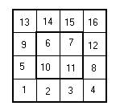
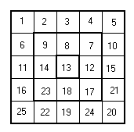
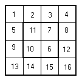
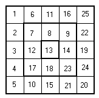

Squarelotron a) as 2 rings while squarelotron b) has 3.
| Flip-Flop the Squarelotron |
While Anita was cleaning the bathtub she found a new toy. It is extremely weird, and posses a lot of mathematical symmetry, it is a Squarelotron game. She is determined to understand this new toy, otherwise she won´t be able to play with Von Hauser’ kids. However the complexity of such extreme toy makes it dificult to play. That’s why Anita asked the judges of this ITESM Campus Monterrey internal ACM programming contest eliminatory to put this problem, so that answers could be given by the best sttudents of computer science and engineering of this Campus.
A Squarelotron consist basically of a matrix of numbers. However this matrix can be decomposed as squared rings which can rotate independently in 4 diferent ways, Upside-Down, Left-Rigt, through the Main Inverse Diagonal and through the Main Diagonal.
For example Consider the following Squarelotrons.
Squarelotron a) as 2 rings while squarelotron b) has 3.
A Upside-Down Flip of the outmost ring of Squarelotron a) yields:

A Left-Rigth Flip of the 2 ring of squarelotron b) yields:

A Flip through the Main Inverse Diagonal of the second ring of
squarelotron a) yields:

A Flip through the Main Diagonal of the outermost ring of squarelotron
b) yields:

Anita wants you to do a program which performs the following. She will
give you a Squarelotron and your program will perform several of the flips
described earlier for each of the rings of the given Squarelotron. The
output of your program should be the final state of the Squarelotron.
All these numbers are in the following ranges:
0<M<=1000
1<=N<101
0<T<= Number of Rings
1<=C<5
The numbers in the squarelotron are smaller than 2^16.
The Moves are identifies as follows. 1 means Upside-Down Flip, 2 Means
Left-Right Flip, 3 means flip through the Main Diagonal, 4 means
a flip through the Main Inverse Diagonal.
4 3 1 2 3 4 5 6 7 8 9 2 1 2 4 1 2 3 4 4 1 2 3 4 5 6 7 8 9 1 2 3 4 5 6 6 2 1 2 2 3 4 5 1 2 3 4 5 6 7 8 9 1 2 3 4 5 6 7 8 9 1 2 3 4 5 6 7 2 3 4 2 1 3 4 1 3 2 4 6 1 2 3 4 5 6 7 8 9 1 2 3 4 5 6 7 8 9 1 2 3 4 5 6 7 8 9 1 2 3 4 5 6 7 8 9 2 4 1 2 2 3 1 1
9 8 7 6 5 4 3 2 1 6 6 5 4 3 2 1 9 8 7 6 5 4 3 2 1 7 6 5 4 3 2 8 3 7 7 6 9 4 8 2 1 1 5 9 6 5 4 3 2 1 4 7 1 4 7 1 5 2 8 5 2 2 6 1 3 4 1 3 7 9 6 7 9 4 8 8 5 2 8 5 9 3 6 9 3 6